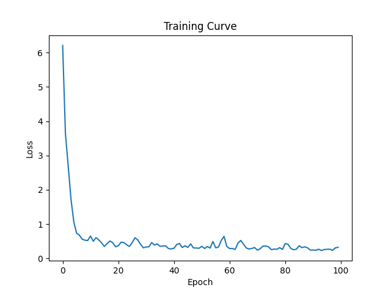
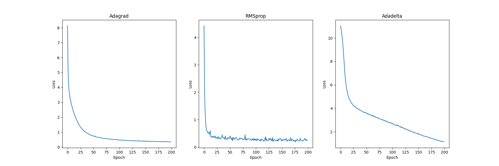
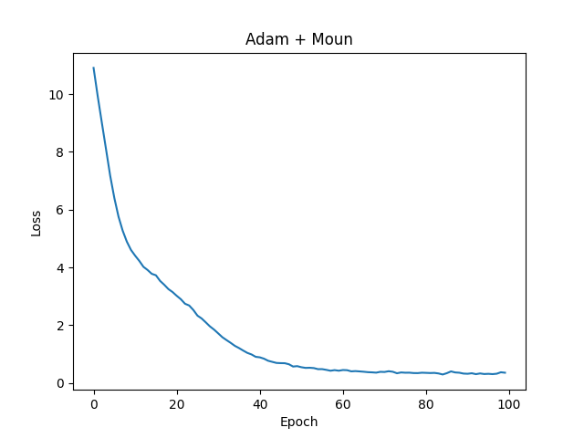

本期内容
- 经典优化方法
- 自适应学习率方法
- 现代方法
- 前沿方法
经典优化方法
为什么不用牛顿法？
牛顿法的核心在于利用二阶导数（海森矩阵 $H$）来寻找最优步长。虽然它收敛极快，但公式中的矩阵求逆操作 $H^{-1}$ 是计算噩梦。
其更新公式为：
$$ \theta_{t+1} = \theta_t - H^{-1} \nabla L(\theta_t) $$其中 $H$ 是海森矩阵。对于拥有 $n$ 个参数的模型，计算并存储 $H^{-1}$ 的复杂度高达 $O(n^3)$ 和 $O(n^2)$。当 $n$ 达到百万级甚至亿级时，这一操作在工程上是不可行的，因此我们只能退回到仅使用一阶导数（梯度）的方法。
全量梯度下降（GD）
GD 是最朴素的一阶优化方法。它的核心逻辑是：每次更新都基于全量数据计算出的精确梯度。
其更新公式为：
$$ \theta_{t+1} = \theta_t - \eta \frac{1}{N} \sum_{i=1}^{N} \nabla L(f(x_i; \theta_t), y_i) $$这里 $N$ 是训练集的总样本数。公式中的求和项 $\sum$ 意味着模型必须遍历所有 $N$ 个样本才能进行一次参数更新。虽然梯度方向精准，但当 $N$ 很大时，计算成本极高，且无法在线更新。
随机梯度下降（SGD）
SGD 对 GD 的公式进行了“抽样简化”。它不再计算全量梯度的和，而是用单个样本（或小批量数据）的梯度来近似整体梯度。
其核心更新公式（以单样本为例）为：
$$ \theta_{t+1} = \theta_t - \eta \nabla L(f(x_j; \theta_t), y_j) $$这里 $(x_j, y_j)$ 是从数据集中随机抽取的一个样本。
本质区别： SGD 用 $\nabla L(x_j)$ 代替了 GD 中的 $\frac{1}{N} \sum \nabla L(x_i)$。虽然这个估计带有噪声，但它极大地降低了单次计算量，使得模型可以快速、频繁地更新参数。
SGD 收敛条件（Robbins-Monro 条件）
假设 $t$ 代表训练步数，$\eta_t$ 代表第 $t$ 步的学习率。SGD 要保证收敛，学习率的衰减必须同时满足以下两条数学公式：
-
总步长无限
$$ \sum_{t=1}^{\infty} \eta_t = \infty $$物理含义：保证模型有足够的“动力”走到最优解的区域。
-
步长平方和有限
$$ \sum_{t=1}^{\infty} \eta_t^2 < \infty $$物理含义：保证后期的步长足够小，能够消除随机噪声，最终稳定在极值点而不震荡。
Mini-batch SGD
在实际工程中，我们通常使用两者的折中方案，即小批量随机梯度下降。
其公式为：
$$ \theta_{t+1} = \theta_t - \eta \frac{1}{B} \sum_{k=1}^{B} \nabla L(f(x_k; \theta_t), y_k) $$这里 $B$ 是批量大小。它既保留了 SGD 的高效性（不用遍历全量数据），又利用了矩阵运算的并行优势（比单样本更稳定）。为了配合这个公式，工程上必须引入 Shuffle（打乱），以确保每个 Batch 都是整体分布的无偏估计。
代码实现
数据处理组件
- TensorDataset：将特征张量 (X) 和标签张量 (y) 包装成标准数据集对象。
- DataLoader：接收 Dataset，自动生成 Mini-batch 迭代器，支持自动打乱 (shuffle) 和多进程预加载 (num_workers)。
关于DataLoader算创建的对象：
- 批次化提取器：它像一个智能分发机，严格按照设定的
batch_size，将打包好的Train_Data按批次切分并取出。 - 自带随机洗牌机制：因为开启了
shuffle=True，它在每一轮数据遍历开始时，都会自动将原始数据的顺序彻底打乱，保证模型不会记住数据的排列规律。 - 可重复使用的迭代工厂：它不是“一次性”的迭代器。每当外层循环进入下一个 Epoch（重新调用它）时，它会自动重置进度条，从头开始新一轮的数据提取。
- 每轮独立且动态：每一次重新调用，它都会生成一套全新的、与上一轮完全不同的随机数据顺序，持续为多轮训练提供多样化的数据输入。
核心参数与概念
- Batch size：单次传入模型的样本数量，决定了单次梯度更新的计算依据。
- Epoch：模型完整遍历一遍训练集的次数。
- Iteration/Step：模型处理完一个 Mini-batch 并更新一次参数的过程。
数学关系
- 迭代次数公式：在一个 Epoch 中，迭代次数等于总样本数除以 Batch size 的向上取整。
下面给出实现代码： Step1：导入需要用到的库
|
|
Step2：生成数据
|
|
Step3：数据打包，创建迭代器
|
|
Step4：定义网络，损失函数，优化器
|
|
Step5：模型训练
|
|
下面给出训练损失函数下降图：

自适应学习率方法
SGD的缺点
SGD的一大核心缺陷在于其“峡谷震荡”问题。当损失函数的曲面呈现某一方向极其陡峭而另一方向极其平缓的“峡谷”形状时，SGD的表现会非常糟糕：在陡峭方向上，梯度很大导致参数剧烈震荡；而在平缓方向上，梯度极小导致参数推进缓慢。为了解决这一问题，我们需要一种能够自适应地为不同参数分配不同学习率的方法——即自适应学习率算法。
Adagrad
背景与核心思想 为了解决SGD在不同方向上步长难以平衡的震荡问题，Adagrad提出了自适应学习率的思想：对于频繁更新（梯度大）的参数，自动减小学习率；对于稀疏更新（梯度小）的参数，增大学习率。
核心公式 Adagrad通过累积过去所有梯度的平方和 $G_t$ 来实现自适应：
$$ G_t = G_{t-1} + g_t^2 $$$$ \theta_{t+1} = \theta_t - \frac{\eta}{\sqrt{G_t} + \epsilon} g_t $$
缺陷 虽然解决了震荡，但存在致命缺陷。因为 $G_t$ 是单调递增的（只加不减），导致分母越来越大，学习率 $\eta$ 在训练中后期会不断衰减，最终趋近于0。这使得模型在还没完全收敛时就提前“停止学习”（梯度消失）。
RMSprop
背景与核心思想 为了解决Adagrad学习率过早衰减至零的问题，RMSprop认为我们不需要记住“所有历史”，只需要关注“近期梯度”。它用指数移动平均替代了累加求和，引入了遗忘机制。
核心公式 RMSprop维护梯度平方的指数加权移动平均 $E[g^2]_t$：
$$ E[g^2]_t = \gamma E[g^2]_{t-1} + (1-\gamma) g_t^2 $$$$ \theta_{t+1} = \theta_t - \frac{\eta}{\sqrt{E[g^2]_t} + \epsilon} g_t $$
优点
- 解决消失问题：由于引入了衰减率 $\gamma$（通常为0.9或0.99），优化器会“遗忘”太久远的梯度信息，保持学习率的活性。
- 适应性强：非常适合处理非平稳目标函数（如RNN），极大地改善了训练效果。
Adadelta
背景与核心思想 Adadelta在RMSprop的基础上进一步改进。它指出了RMSprop的一个理论缺陷：更新量的量纲与参数本身不一致。同时，它试图消除对全局学习率 $\eta$ 的依赖。
核心公式 Adadelta不仅维护梯度平方的移动平均，还维护了参数更新量 $\Delta\theta$ 的移动平均：
$$ E[g^2]_t = \gamma E[g^2]_{t-1} + (1-\gamma) g_t^2 $$$$ RMS[g]_t = \sqrt{E[g^2]_t + \epsilon} $$
$$ \Delta\theta_t = - \frac{RMS[\Delta\theta]_{t-1}}{RMS[g]_t} g_t $$
$$ \theta_{t+1} = \theta_t + \Delta\theta_t $$
改进点
- 修复量纲：通过引入 $RMS[\Delta\theta]$，使得更新步长在物理量纲上与参数一致。
- 无需全局学习率：理论上完全抛弃了超参数 $\eta$，通过历史更新量的比例自动调节步长。
代码实现
前期的数据生成与打包代码与之前内容一致，此处省略，下面给出三种优化器的代码实现：
|
|
最终三种优化器的损失函数曲线如下图所示：

现代方法
Adam
Adam（Adaptive Moment Estimation）是目前深度学习中最主流的优化器，它巧妙地结合了 动量（Momentum） 和 自适应学习率（RMSprop） 两种思想。
核心思想：
- 一阶矩（动量）：计算梯度的指数移动平均，利用惯性帮助模型冲过鞍点，并平滑震荡。
- 二阶矩（自适应）：计算梯度平方的指数移动平均，为不同参数分配不同的自适应学习率（类似RMSprop）。
核心公式：
Step1:计算矩估计
$$m_t = \beta_1 m_{t-1} + (1-\beta_1) g_t$$$$v_t = \beta_2 v_{t-1} + (1-\beta_2) g_t^2$$
Step2:偏差修正（因为初始值为0，早期估计会有偏差）
$$\hat{m}_t = m_t / (1 - \beta_1^t)$$$$\hat{v}_t = v_t / (1 - \beta_2^t)$$
Step3:更新参数：
$$\theta_{t+1} = \theta_t - \eta \cdot \hat{m}_t / (\sqrt{\hat{v}_t} + \epsilon)$$补充：AdamW AdamW是 Adam 的改进版。主要区别在于处理权重衰减（Weight Decay）的方式：AdamW 将权重衰减与梯度更新解耦，直接在参数更新最后按比例减去权重，而不是将其作为损失函数的一部分。这在训练 Transformer 等大模型时几乎是标配。
Muon
Muon (Momentum Orthogonalizer) 是针对大模型训练提出的前沿优化器，旨在在计算效率和二阶信息之间寻找新的平衡。
核心思路：
- 背景痛点：一阶方法（如Adam）无法像二阶方法那样捕捉参数之间的曲率关系，但在大模型中计算二阶信息（如海森矩阵）成本过高。
- 核心创新：Muon 提出对 动量矩阵 进行 正交化。
- 实现方式：利用 Newton-Schulz 迭代来近似计算矩阵的逆。这在数学上等价于某种形式的二阶预条件（Preconditioning），但避免了直接计算巨大的海森矩阵。
- 优势：利用现代 GPU 强大的矩阵乘法算力，通过增加少量计算开销来显著减少收敛所需的步数，特别适合包含大量二维权重矩阵（如 Transformer）的大规模模型训练。
代码实现
准备工作同上，不再赘述。
这里展示如何同时使用两种优化器Adam和Moun分别对偏移参数和权重参数进行优化，代码如下：
Step1:定义模型，损失函数，优化器
|
|
Step2：训练模型
|
|
最终损失函数曲线如下图所示：
